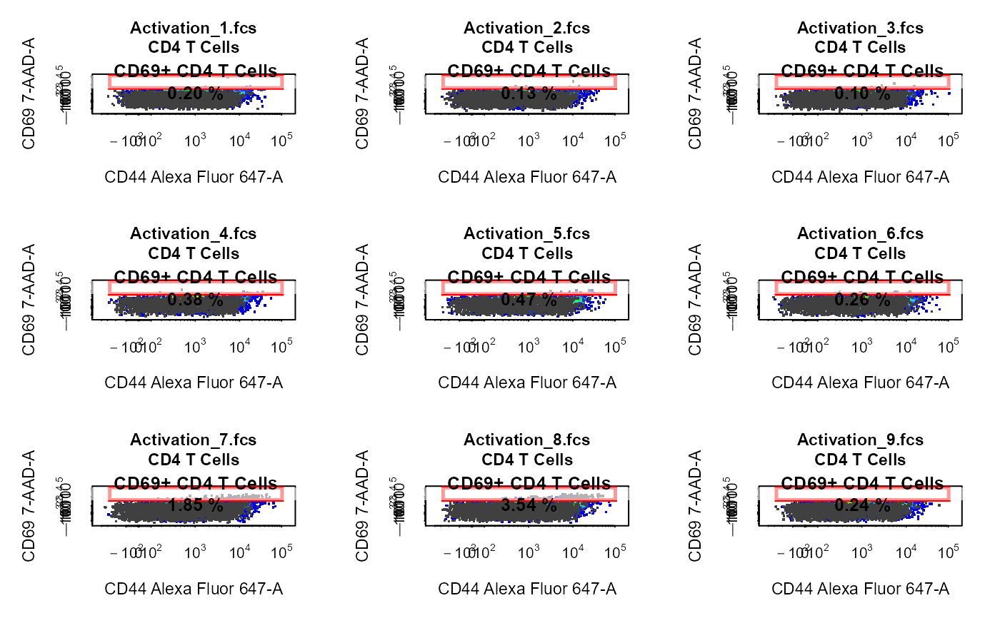

Explore and visualise cytometry data.
# S3 method for GatingSet cyto_plot( x, parent, alias = NA, channels, axes_trans = NA, group_by = "name", overlay = NA, gate = NA, display = 25000, layout, popup = FALSE, xlim = NA, ylim = NA, xlab, ylab, title, negate, density_modal = TRUE, density_smooth = 0.6, density_stack = 0, density_layers = NA, density_cols = NA, density_fill = NA, density_fill_alpha = 1, density_line_type = 1, density_line_width = 1, density_line_col = "black", point_shape = ".", point_size = 2, point_col_scale = NA, point_cols = NA, point_col = NA, point_col_alpha = 1, contour_lines = 0, contour_line_type = 1, contour_line_width = 1, contour_line_col = "black", contour_line_alpha = 1, axes_limits = "auto", axes_limits_buffer = 0.03, axes_text = c(TRUE, TRUE), axes_text_font = 1, axes_text_size = 1, axes_text_col = "black", axes_label_text_font = 1, axes_label_text_size = 1.1, axes_label_text_col = "black", title_text_font = 2, title_text_size = 1.1, title_text_col = "black", legend = FALSE, legend_text = NA, legend_text_font = 1, legend_text_size = 1, legend_text_col = "black", legend_line_type = NA, legend_line_width = NA, legend_line_col = NA, legend_box_fill = NA, legend_point_col = NA, gate_line_type = 1, gate_line_width = 2.5, gate_line_col = "red", gate_fill = "white", gate_fill_alpha = 0, label, label_text = NA, label_stat = "", label_position = "auto", label_text_x = NA, label_text_y = NA, label_text_font = 2, label_text_size = 0.8, label_text_col = "black", label_fill = "white", label_fill_alpha = 0.6, border_line_type = 1, border_line_width = 1, border_line_col = "black", border_fill = "white", border_fill_alpha = 1, ... ) # S3 method for GatingHierarchy cyto_plot( x, parent, alias = NA, channels, axes_trans = NA, overlay = NA, gate = NA, axes_limits = "auto", display = 25000, popup = FALSE, xlim = NA, ylim = NA, xlab, ylab, title, negate, density_modal = TRUE, density_smooth = 0.6, density_stack = 0, density_cols = NA, density_fill = NA, density_fill_alpha = 1, density_line_type = 1, density_line_width = 1, density_line_col = "black", point_shape = ".", point_size = 2, point_col_scale = NA, point_cols = NA, point_col = NA, point_col_alpha = 1, contour_lines = 0, contour_line_type = 1, contour_line_width = 1, contour_line_col = "black", contour_line_alpha = 1, axes_limits_buffer = 0.03, axes_text = c(TRUE, TRUE), axes_text_font = 1, axes_text_size = 1, axes_text_col = "black", axes_label_text_font = 1, axes_label_text_size = 1.1, axes_label_text_col = "black", title_text_font = 2, title_text_size = 1.1, title_text_col = "black", legend = FALSE, legend_text = NA, legend_text_font = 1, legend_text_size = 1, legend_text_col = "black", legend_line_type = NA, legend_line_width = NA, legend_line_col = NA, legend_box_fill = NA, legend_point_col = NA, gate_line_type = 1, gate_line_width = 2.5, gate_line_col = "red", gate_fill = "white", gate_fill_alpha = 0, label, label_text, label_stat, label_position = "auto", label_text_x = NA, label_text_y = NA, label_text_font = 2, label_text_size = 1, label_text_col = "black", label_fill = "white", label_fill_alpha = 0.6, border_line_type = 1, border_line_width = 1, border_line_col = "black", border_fill = "white", border_fill_alpha = 1, ... ) # S3 method for flowSet cyto_plot( x, channels, axes_trans = NA, group_by = "name", overlay = NA, gate = NA, axes_limits = "auto", display = 25000, layout, popup = FALSE, xlim = NA, ylim = NA, xlab, ylab, title, negate = FALSE, density_modal = TRUE, density_smooth = 0.6, density_stack = 0, density_layers = NA, density_cols = NA, density_fill = NA, density_fill_alpha = 1, density_line_type = 1, density_line_width = 1, density_line_col = "black", point_shape = ".", point_size = 2, point_col_scale = NA, point_cols = NA, point_col = NA, point_col_alpha = 1, contour_lines = 0, contour_line_type = 1, contour_line_width = 1, contour_line_col = "black", contour_line_alpha = 1, axes_limits_buffer = 0.03, axes_text = c(TRUE, TRUE), axes_text_font = 1, axes_text_size = 1, axes_text_col = "black", axes_label_text_font = 1, axes_label_text_size = 1.1, axes_label_text_col = "black", title_text_font = 2, title_text_size = 1.1, title_text_col = "black", legend = FALSE, legend_text = NA, legend_text_font = 1, legend_text_size = 1, legend_text_col = "black", legend_line_type = NA, legend_line_width = NA, legend_line_col = NA, legend_box_fill = NA, legend_point_col = NA, gate_line_type = 1, gate_line_width = 2.5, gate_line_col = "red", gate_fill = "white", gate_fill_alpha = 0, label, label_text = NA, label_stat, label_position = "auto", label_text_x = NA, label_text_y = NA, label_text_font = 2, label_text_size = 0.8, label_text_col = "black", label_fill = "white", label_fill_alpha = 0.6, border_line_type = 1, border_line_width = 1, border_line_col = "black", border_fill = "white", border_fill_alpha = 1, ... ) # S3 method for flowFrame cyto_plot( x, channels, axes_trans = NA, overlay = NA, gate = NA, axes_limits = "auto", display = 25000, popup = FALSE, xlim = NA, ylim = NA, xlab, ylab, title, negate = FALSE, density_modal = TRUE, density_smooth = 0.6, density_stack = 0, density_cols = NA, density_fill = NA, density_fill_alpha = 1, density_line_type = 1, density_line_width = 1, density_line_col = "black", point_shape = ".", point_size = 2, point_col_scale = NA, point_cols = NA, point_col = NA, point_col_alpha = 1, contour_lines = 0, contour_line_type = 1, contour_line_width = 1, contour_line_col = "black", contour_line_alpha = 1, axes_limits_buffer = 0.03, axes_text = c(TRUE, TRUE), axes_text_font = 1, axes_text_size = 1, axes_text_col = "black", axes_label_text_font = 1, axes_label_text_size = 1.1, axes_label_text_col = "black", title_text_font = 2, title_text_size = 1.1, title_text_col = "black", legend = FALSE, legend_text = NA, legend_text_font = 1, legend_text_size = 1, legend_text_col = "black", legend_line_type = NA, legend_line_width = NA, legend_line_col = NA, legend_box_fill = NA, legend_point_col = NA, gate_line_type = 1, gate_line_width = 2.5, gate_line_col = "red", gate_fill = "white", gate_fill_alpha = 0, label, label_text, label_stat, label_position = "auto", label_text_x = NA, label_text_y = NA, label_text_font = 2, label_text_size = 1, label_text_col = "black", label_fill = "white", label_fill_alpha = 0.6, border_line_type = 1, border_line_width = 1, border_line_col = "black", border_fill = "white", border_fill_alpha = 1, ... )
| x | object of class |
|---|---|
| parent | name of the population to plot when a |
| alias | name of the gated population(s) to gated in the plot when a
|
| channels | name of the channel(s) or marker(s) to be used to construct the plot. The length of channels determines the type of plot to be constructed, either a 1-D density distribution for a single channel or a 2-D scatterplot with blue-red colour scale for two channels. |
| axes_trans | object of class
|
| group_by | a vector of pData variables to sort and merge samples into
groups prior to plotting, set to "name" by default to prevent merging. To
merge all samples set this argument to |
| overlay | name(s) of the populations to overlay or a |
| gate | gate objects to be plotted, can be either objects of class
|
| display | numeric to control the number or percentage of events to
display. Values [0,1] indicate the percentage of events to display (i.e.
value of 1 will display all events), whilst values larger than 1 indicate
the number of events to display. The default value for |
| layout | a vector of the length 2 indicating the dimensions of the grid
for plotting |
| popup | logical indicating whether the plot should be constructed in a
pop-up window, set to FALSE by default. |
| xlim | lower and upper limits of x axis (e.g. c(0,250000)). |
| ylim | lower and upper limits of y axis (e.g. c(0,250000)). |
| xlab | x axis label. |
| ylab | y axis label. |
| title | title to use for the plot, set to the name of the sample by
default. Title can be removed by setting this argument to |
| negate | logical indicating whether a label should be included for the negated population when gate objects are supplied, set to FALSE by default. |
| density_modal | logical indicating whether density should be normalised
to mode and presented as a percentage for 1-D plots. Set to |
| density_smooth | smoothing parameter passed to
|
| density_stack | numeric [0,1] indicating the degree of offset for 1-D density distributions with overlay, set to 0.5 by default. |
| density_layers | numeric indicating the number of samples to stack in each plot, set to all samples by default. |
| density_cols | vector colours to draw from when selecting density fill colours if none are supplied to density_fill. |
| density_fill | fill colour(s) for 1-D density distributions. |
| density_fill_alpha | numeric [0,1] used to control 1-D density fill colour transparency, set to 1 by default for solid colours. |
| density_line_type | line type(s) to use for 1-D density lines, set to 1
by default to use solid lines. See |
| density_line_width | numeric to control line width(s) for 1-D density lines, set to 1 by default. |
| density_line_col | colour(s) for 1-D density lines, set to
|
| point_shape | shape(s) to use for points in 2-D scatterplots, set to
|
| point_size | numeric to control the size of points in 2-D scatter plots set to 2 by default. |
| point_col_scale | vector of ordered colours to use for the density colour gradient of points. |
| point_cols | vector colours to draw from when selecting colours for points if none are supplied to point_col. |
| point_col | colour(s) to use for points in 2-D scatter plots, set to NA by default to use a blue-red density colour scale. |
| point_col_alpha | numeric [0,1] to control point colour transparency in 2-D scatter plots, set to 1 by default to use solid colours. |
| contour_lines | numeric indicating the number of levels to use for contour lines in 2-D scatter plots, set to 0 by default to turn off contour lines. |
| contour_line_type | integer [0,6] to control the line type of contour
lines in 2-D scatter plots, set to |
| contour_line_width | numeric to control line width(s) for contour lines in 2-D scatter plots, set to 2 by default. |
| contour_line_col | colour(s) to use for contour lines in 2-D scatter
plots, set to |
| contour_line_alpha | numeric [0,1] to control the transparency of contour lines, set to 1 by default to remove transparency. |
| axes_limits | options include |
| axes_limits_buffer | decimal indicating the percentage of buffering to add to either end of the axes limits, set to 0.03 by default. |
| axes_text | logical vector of length 2 indicating whether axis text
should be included for the x and y axes respectively, set to
|
| axes_text_font | numeric to control the font of axes text, set to 1 for
plain font by default. See |
| axes_text_size | numeric to control the size of axes text, set to 1 by default. |
| axes_text_col | colour to use for axes text, set to |
| axes_label_text_font | numeric to control the font axes labels, set to 1
for plain font by default. See |
| axes_label_text_size | numeric to control the text size of axes labels, set to 1.1 by default. |
| axes_label_text_col | colour to use for axes labels text, set to
|
| title_text_font | numeric to control the font of title text, set to 2
for bold font by default. See |
| title_text_size | numeric to control the text size of the plot title, set to 1.1 by default. |
| title_text_col | colour to use for plot title text, set to
|
| legend | can be either |
| legend_text | vector of labels to use in the legend. |
| legend_text_font | numeric to control the font of legend text, set to 1
for plain font by default. See |
| legend_text_size | numeric to control the size of text in the legend, set to 1 by default. |
| legend_text_col | colour(s) to use for text in legend, set to
|
| legend_line_type | numeric to control the line type for line legends,
set to 1 by default. Refer to |
| legend_line_width | numeric to control the line width in line legend,
set to 1 by default. Refer to |
| legend_line_col | colour(s) to use for the lines in 1-D plot legends
when legend is set to |
| legend_box_fill | fill colour(s) to use for the boxes in 1-D plot
legends when legend is set to |
| legend_point_col | colour(s) to use for points in 2-D scatter plot legend. |
| gate_line_type | integer [0,6] to control the line type of gates, set to
|
| gate_line_width | numeric to control the line width(s) of gates, set to
|
| gate_line_col | colour(s) to use for gates, set to |
| gate_fill | fill colour(s) to use for gates, set to "white by default. |
| gate_fill_alpha | numeric to control the fill transparency of gates, set to 0 by default to remove fill colour(s). |
| label | logical indicating whether gated populations should be labelled.
To include the names of the populations in these labels, supply the
population names to the |
| label_text | vector of population names to use in the labels.The exclude the population names set this argument to NA. |
| label_stat | indicates the type of statistic to include in the plot
labels, can be |
| label_position | either "auto" or "manual". The "auto" option (default) positions labels will be placed in the center of gates and offset if necessary. The "manual" option will allow label positioning by mouse click. Label positions are set on a per gate basis, all samples in the same group will have the same label positions. To individually label plots users must manually supply the co-ordinates to label_text_x and label_text_y. |
| label_text_x | vector of x co-ordinate(s) to manually adjust the
position plot label(s) on the plot. To interactively position labels set
either |
| label_text_y | vector of y co-ordinate(s) to manually adjust the
position plot label(s) on the plot. To interactively position labels set
either |
| label_text_font | numeric to control the font of text in plot labels,
set to 2 for bold font by default. See |
| label_text_size | numeric to control the size of text in the plot labels, set to 1 by default. |
| label_text_col | colour(s) to use for text in plot labels, set to
|
| label_fill | fill colour(s) to use for labels, set to "white" by default. |
| label_fill_alpha | numeric to control background fill transparency of label, set to 0.6 by default to introduce some transparency. |
| border_line_type | integer [0,6] to control the line type of plot
border, set to |
| border_line_width | numeric to control line width for the plot border, set to 1 by default. |
| border_line_col | colour to use for the plot border, set to "black" by default. |
| border_fill | border_fill fill colour to use inside the plot border (i.e. background colour), set to "white" by default. |
| border_fill_alpha | transparency to use for border_fill colour, set to 1 by default for no transparency. |
| ... | additional arguments not currently in use. |
library(CytoExploreRData) # Load samples into GatingSet fs <- Activation gs <- GatingSet(fs) # Apply compensation gs <- compensate(gs, fs[[1]]@description$SPILL) # Transform fluorescent channels trans <- estimateLogicle(gs[[4]], cyto_fluor_channels(gs)) gs <- transform(gs, trans) # Apply gatingTemplate gt <- Activation_gatingTemplate gt_gating(gt, gs)#>#>#>#>#>#>#>#>#>#>#>#>#>#>#>#>#>#>#>#>#>#> Warning: Activation_33.fcs: Not enough events to proceed the data-driven gating!Returning a dummy gate instead.#>#>#>#>#> Warning: Activation_33.fcs: Not enough events to proceed the data-driven gating!Returning a dummy gate instead.#>#>#>#>#> Warning: Activation_33.fcs: Not enough events to proceed the data-driven gating!Returning a dummy gate instead.#>#>#>#>#> Warning: Activation_33.fcs: Not enough events to proceed the data-driven gating!Returning a dummy gate instead.#>#>#>#>#>#>#># 2-D scatter plot with overlay & Gates cyto_plot(gs[1:9], parent = "CD4 T Cells", alias = "CD69+ CD4 T Cells", channels = c("Alexa Fluor 647-A", "7-AAD-A"), overlay = "CD8 T Cells" )